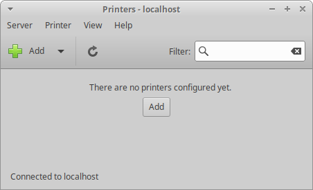
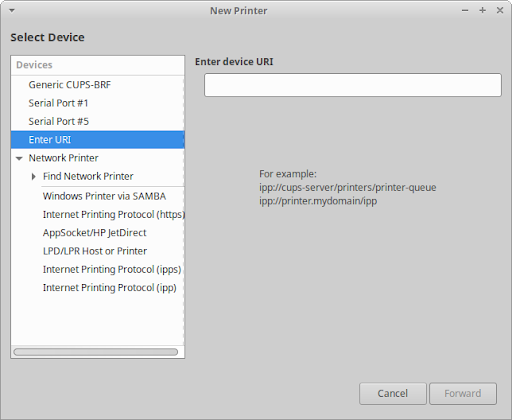
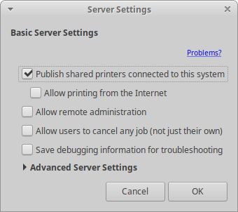
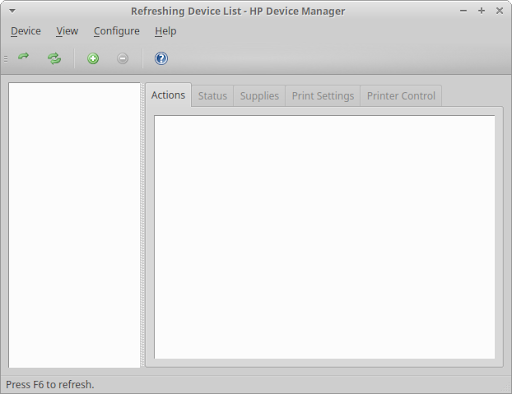
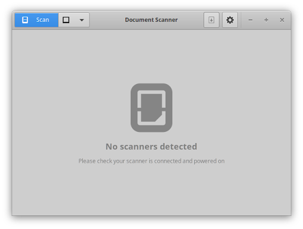

Índice
A maioria das impressoras são automaticamente suportadas pelo Xubuntu, que utiliza a infraestrutura CUPS (Sistema Comum de Impressão do UNIX). Isto inclui o suporte à impressão através de redes com e sem fios e sem controladores com impressoras que suportem o IPP Everywhere e o Apple AirPrint. Caso a sua impressora não seja imediatamente suportada pelo Xubuntu, pode ter de instalar software adicional, tal como o Gutenprint ( printer-driver-gutenprint
printer-driver-gutenprint ippusbxd
ippusbxd
A gestão de impressoras pode ser feita na janela de configurações Impressoras , a qual se encontra acessível através do  , a categoria Gestor de definições do
, a categoria Gestor de definições do  (Ctrl + Escape), e no Localizador de aplicações (Alt + F3).
(Ctrl + Escape), e no Localizador de aplicações (Alt + F3).

O ecrã de configurações Impressoras permite-lhe adicionar uma nova impressora local (ligada diretamente ao seu computador através de um cabo USB, de impressora ou porta série) ou uma impressora de rede (ligada à sua rede ou partilhada na sua rede através de outro computador). Também lhe permite modificar as configurações da listagem de impressoras, tal como alterar os nomes a serem apresentados no sistema, reiniciar ou desativa-las. Também é possível partilhar uma impressora com outros computadores da sua rede, o que a transforma numa impressora de rede. Dependendo da marca e modelo da sua impressora, também pode consultar os seus consumíveis, tais como o toner ou a tinta, bem como o papel, ou enviar tarefas de impressão de teste.
Configurar uma nova impressora local deve ser tão fácil como liga-la ao seu computador e conecta-la. A impressora deverá ser automaticamente detetada e configurada. Assim que for detetada, surgirá um ícone de impressora na área de notificações do painel e irá aparecer uma notificação com a descrição A impressora está pronta para imprimir.

Caso a sua impressora não tenha sido detetada, terá de seguir os seguintes passos:
Abrir o ecrã de configuraçõesImpressoras.
Clicar no botão Adicionar presente na barra de ferramentas ou → → no menu para abrir a janela .
Selecione a entrada apropriada para a Impressora, Porta, URI, Protocolo ou Impressora de rede na lista de Dispositivos do lado esquerdo. Caso a sua impressora não se encontre visível, pode ter de clicar no triângulo junto a “Procurar impressora de rede” para expandir a lista de impressoras da sua rede.
Quando aplicável, preencha quaisquer detalhes relevantes nos campos de texto e/ou listas expansíveis do lado direito da janela e depois clique no botão .
Caso esteja a adicionar uma impressora local, o seu computador irá procura-la e instalar os seus controladores. Caso esteja a instalar uma impressora de rede, existirão passos adicionais para a seleção do fabricante, modelo e controlador da impressora.
Ser-lhe-á então solicitado para introduzir um nome curto, descrição e localização da impressora.
Clique no botão para finalizar a configuração da impressora.
Surgirá uma mensagem com a questão Deseja imprimir uma página de teste?
Se clicar no botão , será impressa uma página de teste e poderá verificar se foi corretamente impressa ou pode clicar em . Independentemente da opção selecionada, a sua impressora está pronta a imprimir.
Caso esteja a ter problemas a adicionar uma impressora través dos passos acima, pode tentar utilizar a interface do CUPS baseada em navegador. A mesma pode ser acedida através de http://localhost:631/. Clique no item de menu Administração presenta na parte superior da página para opções para adicionar e encontrar novas impressoras, Não efetue qualquer alteração nas definições Impressoras ou noutros utilitários de gestão de impressoras do sistema até terminar de utilizar a interface de navegador do CUPS. Pode ter necessidade de reiniciar o CUPS para que as alterações efetuadas na interface baseada em navegador surtam efeito.
![[Nota]](../../libs-common/images/note.png)
|
|
|
Caso a impressora se encontre diretamente ligada a uma máquina Windows da sua rede, escolha a entrada Impressora Windows através do SAMBA da lista de Dispositivos.. Caso não saiba o protocolo ou os detalhes da sua impressora de rede, consulte o manual da impressora ou a administrador da sua rede. Consulte a base de dados OpenPrinting ou a página Comunitária de Apoio a Impressoras para informações relacionadas com a sua impressora. |
Caso pretenda partilhar a sua impressora local com outros computadores da sua rede:
Abrir o ecrã de configuraçõesImpressoras.
Clique em → no menu.
Ative a opção Publicar impressoras partilhadas a este sistema.
Clique no botão .

Depois vá para a sua instalação secundária do Xubuntu e abra as configurações das Impressoras. Clique no botão Adicionar presente na barra de ferramentas e expanda a opção Impressora de rede. A impressora partilhada deverá aparecer por baixo do endereço IP partilhado do computador. Poderá ter necessidade de encontrar o endereço IP antecipadamente através da opção Encontrar impressora de rede.
Caso possua uma impressora HP (Hewlett Packard) e pretenda geri-la através de software adicional, pode instala-lo através dos Utilitários de interface gráfica HP Linux Imaging and Printing (HPLIP) ( hplib-gui
hplib-gui e na categoria Outros do . Em impressoras de tinta suportadas é possível monitorizar o nível de tinta, alterar o tipo de papel e a qualidade da impressão, bem como limpar as cabeças da impressora. Em impressoras a laser, é possível monitorizar o nível do toner, verificar o estado da impressora, alterar o tamanho do papel e gerir a qualidade da impressão. Para dispositivos tudo-em-um (multifunções), é possível alterar as definições e funcionalidades de fax. Para mais informações acerca do HPLIP clique aqui.
e na categoria Outros do . Em impressoras de tinta suportadas é possível monitorizar o nível de tinta, alterar o tipo de papel e a qualidade da impressão, bem como limpar as cabeças da impressora. Em impressoras a laser, é possível monitorizar o nível do toner, verificar o estado da impressora, alterar o tamanho do papel e gerir a qualidade da impressão. Para dispositivos tudo-em-um (multifunções), é possível alterar as definições e funcionalidades de fax. Para mais informações acerca do HPLIP clique aqui.

A base de dados OpenPrinting armazena informação acerca de impressoras, dos seus controladores e da qualidade do seu suporte no Linux. Caso não tenha a certeza do suporte de uma impressora num ambiente Linux, consulte essa base de dados, Também é útil para consulta antes da compra de uma nova impressora.
À semelhança do suporte para impressoras, o Xubuntu também possui suporte plug and play para muitos digitalizadores, uma vez que atualmente muitos deles vêm embutidos em dispositivos multifunções. O suporte a digitalizadores no Linux é fornecido pelo projeto SANE, que mantém uma lista de digitalizadores suportados. Pode ser conseguido um suporte adicional a digitalizadores através do SANE-airscan (instalar), o qual permite a digitalização em digitalizadores de rede com suporte a Apple AirScan (eSCL) e Microsoft WSD.
Para começar a utilizar o seu digitalizador, abra a aplicação Digitalizador de documentos ou Digitalização Simples, a qual pode ser acedida através da categoria Gráficos do  (Ctrl + Esc) e no Localizador de aplicações (Alt + F3). Siga os passos seguintes para digitalizar um documento, figura/imagem, etc:
(Ctrl + Esc) e no Localizador de aplicações (Alt + F3). Siga os passos seguintes para digitalizar um documento, figura/imagem, etc:
Conecte o digitalizador e ligue-o.
Coloque o que pretende digitalizar na mesa ou alimentador do digitalizador.
Caso tenha uma tampa, feche-a.
Clique na seta à direita do botão e escolha o tipo de meio que está a digitalizar, Texto ou Fotografia.
Clique no botão para iniciar a digitalização.

Existem duas razões pelas quais pode receber esta mensagem:
O seu digitalizador não é suportado automaticamente, o que inclui a maior dos digitalizadores de porta série e impressoras/digitalizadores/faxes multifunções da Lexmark.
O controlador do seu digitalizador não está a ser carregado automaticamente.
Poderá ser capaz de conseguir colocar o digitalizador a funcionar através da instalação de um controlador ou pela alteração de alguns ficheiros de configuração. Por favor aconselhe-se nos fóruns do Ubuntu ou em AskUbuntu.
|
|
|
|
Para fazer com que alguns digitalizadores funcionem, pode ser necessário ligar o digitalizador ao computador após este último ter arrancado.. |
Alguns scanners possuem controladores incompletos fornecidos pelo projeto SANE. Estes controladores podem ser utilizados nalguns casos, mas é possível que nem todos os recursos do dispositivo funcionem. Para estes digitalizadores:
Instale o pacote  libsane-extras
libsane-extras
Execute pkexec mousepad /etc/sane.d/dll.conf na linha de comandos para abrir o ficheiro de controlador do SANE para edição.
Ative o controlador correto para o seu digitalizador, removendo o # da frente do nome do controlador. Poderá ser necessário pesquisar na internet para descobrir qual o controlador certo.
Grave o ficheiro e abra a Digitalização Simples. Se tudo correr bem, o digitalizador irá agora funcionar.
 |
 |
|
| Capítulo 8. Configurações - Conectividade |

|
Capítulo 10. Gestão de utilizadores |